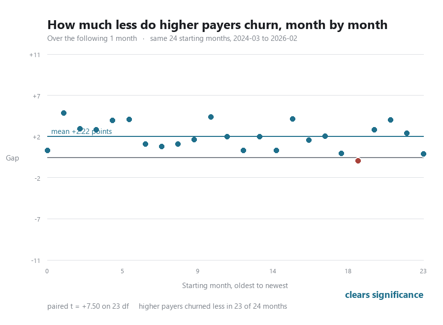

1. LTV:CAC by cohort
2. Expected payback by cohort
3. Cumulative gross profit against cost, by cohort age
4. Blended retention curve, logos against revenue
5. Monthly logo churn rate
Churned logos over the prior month closing base.
6. Retention at month 3 and month 6, by cohort
A cohort appears only once that age is behind it. Plotting it earlier would make every recent cohort read as perfect.
7. Cost per logo against revenue per logo
8. Retention curve by era
9. Monthly logo flows
10. Logos kept, this year against last year
11. Revenue kept, same customers and same windows
12. Price at signup against volume
13. Onboarding: how many are charged, and how much
14. How a month starts: start type mix
15. Break-even month by cohort
Forward churn
A cohort curve follows one intake as it decays. These follow the whole base from a standing start: take everyone active in a month, and see how many are still there four months later. That is the number that moves revenue, and it can be asked of every month rather than only of new arrivals.
16. Forward four months, from each of the last 24 starting months
17. Four-month survival, by starting month
18. Customer Success capacity against churn
19. Is either relationship moving?
20. Does churn rise when fewer customers arrive?
The same questions, animated
Three of the charts above have a dimension that will not fit in one frame. These hold both axes fixed and move only the thing being varied, so a point that shifts has really shifted rather than being rescaled. They are redrawn from the data on every push, so they cannot fall behind the page.
21. Churn against arrivals, one to six months

The cloud lifts as the horizon lengthens and never tilts. Churn accumulates, and it accumulates about equally across the whole range of intake volumes. On axes that rescaled each frame every panel would look much the same and none of that would be visible.
22. The same, split by what customers pay

Splitting by price separates the clouds vertically and leaves the horizontal story just as flat. This one is included because it reads as though nothing is there, and that reading is wrong: nearly all the visible scatter is between months rather than between the two halves within a month. The chart below is the honest picture of the same comparison.
23. How much less higher payers churn, month by month

The paired difference clears significance at every horizon, from t = +2.36 at one month to t = +4.14 at six, and the gap widens the longer you look. Higher payers churned less in fifteen to nineteen months of twenty four depending on the window.
A scatter of two overlapping groups is the wrong picture for a paired comparison: it shows the noise the comparison conditions out. Plotting the per-month difference instead shows what the test actually looks at. Blue is a month where higher payers churned less, red where they churned more.